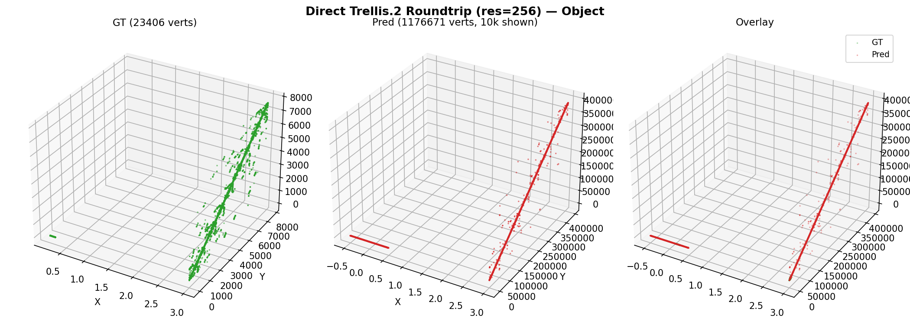
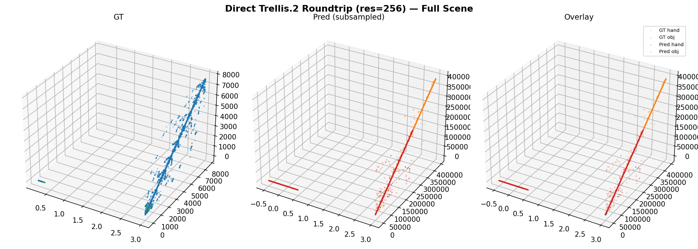

Left: GT hand (778 verts). Center: Predicted hand (240K verts, 10K subsampled). Right: Overlay. The predicted hand preserves the overall shape geometry.
Trellis.2 SC-Encoder → SC-Decoder Direct Round-Trip Validation
| Branch | GT Vertices | GT Faces | Input Voxels | Latent Tokens | Latent Dim | KL |
|---|---|---|---|---|---|---|
| Hand (sealed) | 778 | 1538 | 240,048 | 888 | 32 | 19.95 |
| Object | 7,678 | 15,728 | 391,823 | 1,329 | 32 | 20.50 |
| Branch | Pred Vertices | Pred Faces | Vertex Ratio (pred/GT) | Roundtrip Time |
|---|---|---|---|---|
| Hand | 240,048 | 480,234 | 308x | 177s |
| Object | 391,823 | 784,848 | 51x |
grid_size=256) produced 63K hand / 76K object pred vertices.
Our direct round-trip produces 240K hand / 392K object — higher counts due to the sealed wrist and
slightly different voxelization parameters. The vertex inflation is a known Trellis.2 behavior at high resolution.
The critical validation is that the shapes are geometrically correct (see visualizations below),
unlike the collapsed output at sparse_resolution=8.
Left: GT hand (778 verts). Center: Predicted hand (240K verts, 10K subsampled). Right: Overlay. The predicted hand preserves the overall shape geometry.

Left: GT object (7.7K verts). Center: Predicted object (392K verts, 10K subsampled). Right: Overlay.

Left: GT scene. Center: Predicted scene. Right: Overlay.
sparse_resolution=8, both branches collapsed to 1 latent token, producing degenerate output. This was a configuration error, not a code bugsparse_resolution=8, meaning the token bridge was optimizing on collapsed 1-token latents. The loss converged but on meaningless representationssparse_resolution=256 (or at least 64) to produce meaningful latent tokens for the token bridge to work with